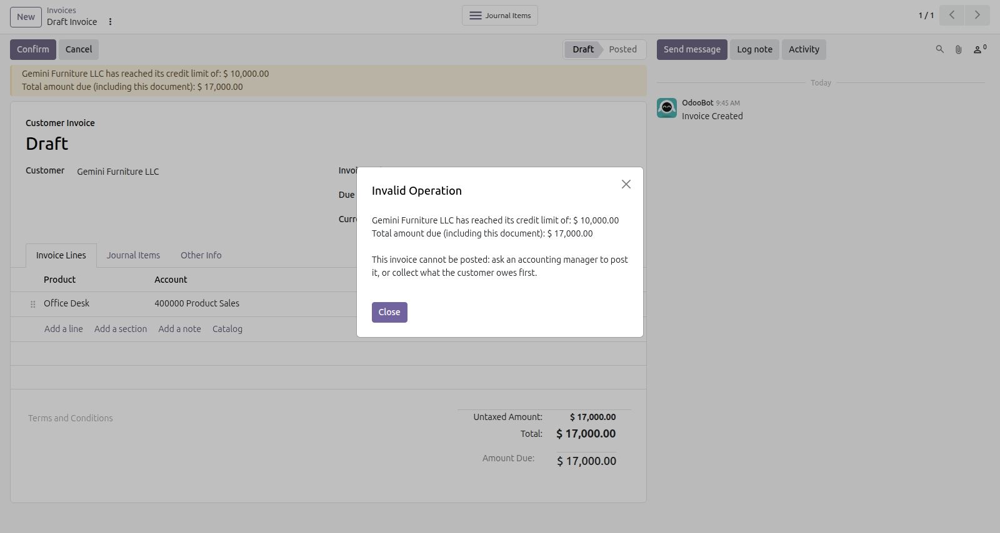
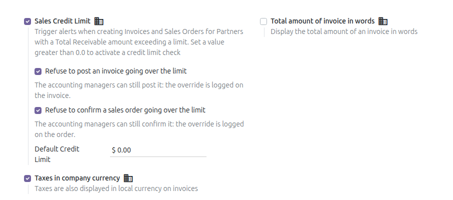

Sales orders too
With Sales installed, Customer Credit Limit on Sales Orders (om_credit_limit_sale) installs itself and adds the same block when confirming an order, as a separate option.

A sales order over the limit, refused for a salesperson.
Odoo warns you when a customer goes over the credit limit. This module stops the invoice being posted, lets the people you choose override it, and keeps a record when they do.
Turn on one option in the settings, on top of the credit limit Odoo already has.
A customer invoice or receipt that takes the customer over the limit cannot be posted, and the user sees why.
Accounting managers can still post it. Give other users the Override the Credit Limit group.
Every override is recorded in the chatter of the invoice, with who did it and the amounts.
The amount due counts what the customer already owes, the sales orders not invoiced yet and this document.

An invoice over the limit, refused for a user without the override.
In the Accounting settings, under Sales Credit Limit. Each company has its own setting.

The options in the settings. The sales order option comes with Sales installed.
With Sales installed, Customer Credit Limit on Sales Orders (om_credit_limit_sale) installs itself and adds the same block when confirming an order, as a separate option.
A sales order over the limit, refused for a salesperson.
What to expect before you install.
Questions? Odoo Mates · odoomates@gmail.com